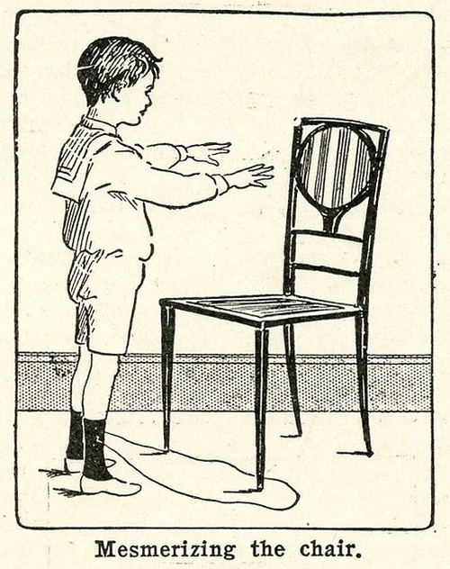

Sunday, July the 29th, 2012
back to: title, date or indexes
As we know, Gerard Manley Hopkins mesmerised a duck. However, he may have practised beforehand, like this little chap:

from Elsie Schrotthaufen
Hooting Yard on the Air, May the 24th, 2018 : “Gus” (starts around 13:35)